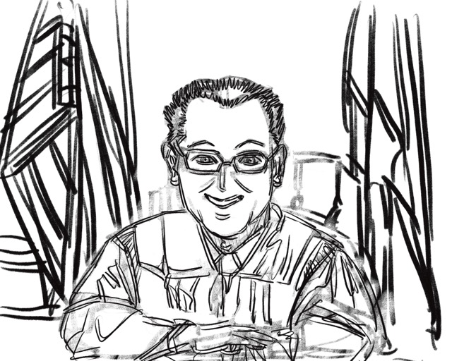

<!DOCTYPE html>
<html lang="en">
<head>
    <meta charset="UTF-8">
    <meta name="viewport" content="width=device-width, initial-scale=1.0">
    <title>Courtroom - Recording</title>
    <link rel="preconnect" href="https://fonts.googleapis.com">
    <link rel="preconnect" href="https://fonts.gstatic.com" crossorigin>
    <link href="https://fonts.googleapis.com/css2?family=Inter:wght@400;700;800&display=swap" rel="stylesheet">
    <link rel="stylesheet" href="styles.css">
    <script crossorigin src="https://unpkg.com/react@18/umd/react.production.min.js"></script>
    <script crossorigin src="https://unpkg.com/react-dom@18/umd/react-dom.production.min.js"></script>
    <script src="https://unpkg.com/@babel/standalone/babel.min.js"></script>
</head>
<body class="courtroom-body">
    <div id="root"></div>
    <script type="text/babel">
        const { useState, useEffect, useRef } = React;

        function Courtroom() {
            const [playerAvatar, setPlayerAvatar] = useState('');
            const [opponentAvatar, setOpponentAvatar] = useState('');
            const [isRecording, setIsRecording] = useState(false);
            const [timeRemaining, setTimeRemaining] = useState(60);
            const [transcriptText, setTranscriptText] = useState('');
            const [interimTranscript, setInterimTranscript] = useState('');
            const [hasRecorded, setHasRecorded] = useState(false);
            const [showControls, setShowControls] = useState(true);
            const [transcriptPosition, setTranscriptPosition] = useState('player');
            const [opponentWords, setOpponentWords] = useState([]);
            const [highlightedWordIndex, setHighlightedWordIndex] = useState(-1);
            
            const mediaRecorderRef = useRef(null);
            const audioChunksRef = useRef([]);
            const timerIntervalRef = useRef(null);
            const recognitionRef = useRef(null);
            const transcriptRef = useRef(null);
            const highlightIntervalRef = useRef(null);
            const finalTranscriptRef = useRef('');
            const isRecordingRef = useRef(false);
            const recordingStartTimeRef = useRef(null);
            const recordingDurationRef = useRef(0);

            const avatarMap = {
                'Berta': 'assets/berta.jpg',
                'Andrew': 'assets/andrew.jpg',
                'Sophia': 'assets/sophia.jpg'
            };

            useEffect(() => {
                const urlParams = new URLSearchParams(window.location.search);
                const player = urlParams.get('player');
                const opponent = urlParams.get('opponent');
                setPlayerAvatar(player || 'Berta');
                setOpponentAvatar(opponent || 'Berta');

                if ('webkitSpeechRecognition' in window || 'SpeechRecognition' in window) {
                    const SpeechRecognition = window.SpeechRecognition || window.webkitSpeechRecognition;
                    recognitionRef.current = new SpeechRecognition();
                    recognitionRef.current.continuous = true;
                    recognitionRef.current.interimResults = true;
                    recognitionRef.current.lang = 'en-US';

                    recognitionRef.current.onresult = (event) => {
                        let interim = '';
                        let final = '';

                        for (let i = event.resultIndex; i < event.results.length; i++) {
                            const transcript = event.results[i][0].transcript;
                            if (event.results[i].isFinal) {
                                final += transcript + ' ';
                            } else {
                                interim += transcript;
                            }
                        }

                        if (final) {
                            finalTranscriptRef.current += final;
                            setTranscriptText(finalTranscriptRef.current);
                        }
                        setInterimTranscript(interim);
                    };

                    recognitionRef.current.onerror = (event) => {
                        console.error('Speech recognition error:', event.error);
                    };

                    recognitionRef.current.onend = () => {
                        if (isRecordingRef.current) {
                            try {
                                recognitionRef.current.start();
                            } catch (e) {
                                console.error('Error restarting recognition:', e);
                            }
                        }
                    };
                }
            }, []);

            useEffect(() => {
                if (transcriptRef.current && (transcriptText || interimTranscript)) {
                    setTimeout(() => {
                        const lineHeight = 36;
                        const totalHeight = transcriptRef.current.scrollHeight;
                        const visibleHeight = transcriptRef.current.clientHeight;
                        const lastLineNumber = Math.floor((totalHeight - visibleHeight) / lineHeight);
                        transcriptRef.current.scrollTop = lastLineNumber * lineHeight;
                    }, 50);
                }
            }, [transcriptText, interimTranscript]);

            useEffect(() => {
                if (timeRemaining <= 0 && isRecordingRef.current && mediaRecorderRef.current) {
                    // Calculate and store recording duration
                    recordingDurationRef.current = recordingStartTimeRef.current 
                        ? (Date.now() - recordingStartTimeRef.current) / 1000 
                        : 0;
                    
                    if (mediaRecorderRef.current && mediaRecorderRef.current.state !== 'inactive') {
                        mediaRecorderRef.current.stop();
                        mediaRecorderRef.current.stream.getTracks().forEach(track => track.stop());
                    }
                    setIsRecording(false);
                    isRecordingRef.current = false;
                    setShowControls(false);
                    setInterimTranscript('');

                    if (recognitionRef.current) {
                        try {
                            recognitionRef.current.stop();
                        } catch (e) {
                            console.error('Error stopping speech recognition:', e);
                        }
                    }

                    if (timerIntervalRef.current) {
                        clearInterval(timerIntervalRef.current);
                        timerIntervalRef.current = null;
                    }

                    setTimeRemaining(60);
                    
                    // Show opponent speech instead of redirecting immediately
                    setTimeout(() => {
                        setTranscriptPosition('opponent');
                        startOpponentSpeech();
                    }, 100);
                }
            }, [timeRemaining]);

            const wrapWords = (text) => {
                if (!text) return '';
                return text.split(/(\s+)/).map(segment => {
                    if (segment.trim()) {
                        return `<span class="word">${segment}</span>`;
                    } else if (segment) {
                        return segment.split('').map(() => '<span class="word space"> </span>').join('');
                    }
                    return segment;
                }).join('');
            };

            const updateTimer = () => {
                setTimeRemaining(prev => {
                    if (prev <= 1) {
                        return 0;
                    }
                    return prev - 1;
                });
            };

            const handleStartRecording = async () => {
                try {
                    const stream = await navigator.mediaDevices.getUserMedia({ audio: true });
                    const mediaRecorder = new MediaRecorder(stream);
                    mediaRecorderRef.current = mediaRecorder;
                    audioChunksRef.current = [];

                    mediaRecorder.ondataavailable = (event) => {
                        audioChunksRef.current.push(event.data);
                    };

                    mediaRecorder.onstop = () => {
                        const audioBlob = new Blob(audioChunksRef.current, { type: 'audio/wav' });
                        console.log('Recording stopped. Audio blob:', audioBlob);
                    };

                    mediaRecorder.start();
                    setIsRecording(true);
                    isRecordingRef.current = true;
                    recordingStartTimeRef.current = Date.now();
                    setTimeRemaining(60);
                    setTranscriptText('');
                    setInterimTranscript('');
                    finalTranscriptRef.current = '';
                    setHasRecorded(true);

                    timerIntervalRef.current = setInterval(updateTimer, 1000);

                    if (recognitionRef.current) {
                        try {
                            recognitionRef.current.start();
                        } catch (e) {
                            console.error('Error starting speech recognition:', e);
                        }
                    }
                } catch (error) {
                    console.error('Error accessing microphone:', error);
                    alert('Unable to access microphone. Please check your permissions.');
                }
            };

            const handleStopRecording = () => {
                if (mediaRecorderRef.current && isRecording) {
                    // Calculate and store recording duration
                    recordingDurationRef.current = recordingStartTimeRef.current 
                        ? (Date.now() - recordingStartTimeRef.current) / 1000 
                        : 0;
                    
                    mediaRecorderRef.current.stop();
                    mediaRecorderRef.current.stream.getTracks().forEach(track => track.stop());
                    setIsRecording(false);
                    isRecordingRef.current = false;
                    setShowControls(false);
                    setInterimTranscript('');

                    if (recognitionRef.current) {
                        try {
                            recognitionRef.current.stop();
                        } catch (e) {
                            console.error('Error stopping speech recognition:', e);
                        }
                    }

                    if (timerIntervalRef.current) {
                        clearInterval(timerIntervalRef.current);
                        timerIntervalRef.current = null;
                    }

                    setTimeRemaining(60);
                    
                    // Show opponent speech instead of redirecting immediately
                    setTimeout(() => {
                        setTranscriptPosition('opponent');
                        startOpponentSpeech();
                    }, 100);
                }
            };

            const startOpponentSpeech = () => {
                const opponentText = "In this debate, we must separate emotional reactions from objective data. Legally, AI training is not theft; it is transformative. In June 2025, U.S. District Judge William Alsup ruled in *Bartz v. Anthropic* that AI training is \"quintessentially transformative,\" as models learn mathematical patterns rather than copying files. Creatively, AI does not devalue art; it democratizes it. Much like photography pushed painting toward Impressionism, AI shifts the creative act from manual labor to conceptual curation and intent. Environmentally, generating one image uses roughly 2.9 Wh—the same as a single smartphone charge. With major providers committing to 100% renewable energy by 2030, the carbon footprint is becoming negligible.";

                const words = opponentText.split(/(\s+)/);
                setOpponentWords(words);
                setTranscriptText(opponentText);

                if ('speechSynthesis' in window) {
                    const utterance = new SpeechSynthesisUtterance(opponentText);
                    utterance.rate = 0.85;
                    utterance.pitch = 1;
                    utterance.volume = 1;

                    let currentWordIndex = 0;
                    const wordsArray = words.filter(w => w.trim());
                    const wordCount = wordsArray.length;
                    const wordsPerMinute = utterance.rate * 150;
                    const msPerWord = (60 / wordsPerMinute) * 1000;

                    const highlightInterval = setInterval(() => {
                        if (currentWordIndex < wordCount) {
                            setHighlightedWordIndex(currentWordIndex);
                            
                            setTimeout(() => {
                                if (transcriptRef.current) {
                                    const wordElements = transcriptRef.current.querySelectorAll('.opponent-word');
                                    if (wordElements[currentWordIndex]) {
                                        const lineHeight = 36;
                                        const wordTop = wordElements[currentWordIndex].offsetTop;
                                        const lineNumber = Math.floor(wordTop / lineHeight);
                                        transcriptRef.current.scrollTop = lineNumber * lineHeight;
                                    }
                                }
                            }, 10);

                            currentWordIndex++;
                        } else {
                            clearInterval(highlightInterval);
                        }
                    }, msPerWord);

                    highlightIntervalRef.current = highlightInterval;

                    utterance.onend = () => {
                        clearInterval(highlightInterval);
                        setHighlightedWordIndex(-1);
                        
                        // Redirect based on recording duration after opponent finishes speaking
                        const recordingDuration = recordingDurationRef.current;
                        if (recordingDuration >= 5) {
                            // More than or equal to 5 seconds - go to win page
                            window.location.href = 'win.html';
                        } else {
                            // Less than 5 seconds - go to lose page
                            window.location.href = 'lose.html';
                        }
                    };

                    utterance.onerror = (event) => {
                        clearInterval(highlightInterval);
                        console.error('Speech synthesis error:', event);
                        // Redirect even if there's an error
                        const recordingDuration = recordingDurationRef.current;
                        if (recordingDuration >= 5) {
                            window.location.href = 'win.html';
                        } else {
                            window.location.href = 'lose.html';
                        }
                    };

                    speechSynthesis.speak(utterance);
                } else {
                    // Fallback: if TTS is not available, redirect after a short delay
                    setTimeout(() => {
                        const recordingDuration = recordingDurationRef.current;
                        if (recordingDuration >= 5) {
                            window.location.href = 'win.html';
                        } else {
                            window.location.href = 'lose.html';
                        }
                    }, 2000);
                }
            };

            const formatTime = (seconds) => {
                const minutes = Math.floor(seconds / 60);
                const secs = seconds % 60;
                return `${minutes}:${secs.toString().padStart(2, '0')}`;
            };

            const renderTranscript = () => {
                if (transcriptPosition === 'opponent' && opponentWords.length > 0) {
                    let wordIndex = 0;
                    return (
                        <div ref={transcriptRef} className="transcript-text">
                            {opponentWords.map((segment, index) => {
                                if (segment.trim()) {
                                    const currentIndex = wordIndex++;
                                    return (
                                        <span
                                            key={index}
                                            className={`opponent-word ${highlightedWordIndex === currentIndex ? 'highlighted' : ''}`}
                                        >
                                            {segment}
                                        </span>
                                    );
                                } else {
                                    return <span key={index}>{segment}</span>;
                                }
                            })}
                        </div>
                    );
                } else {
                    const finalHTML = wrapWords(transcriptText);
                    const interimHTML = wrapWords(interimTranscript);
                    return (
                        <div 
                            ref={transcriptRef}
                            className="transcript-text" 
                            dangerouslySetInnerHTML={{ 
                                __html: finalHTML + (interimHTML ? `<span class="interim" style="opacity: 1;">${interimHTML}</span>` : '')
                            }}
                        />
                    );
                }
            };

            return (
                <div className="courtroom-frame">
                    <div className="judge-container">
                        
                    </div>
                    
                    <div className="avatars-container">
                        <div className={`player-avatar-container ${transcriptPosition === 'opponent' ? 'no-transcript' : ''}`}>
                            
                            {transcriptPosition === 'player' && (
                                <div className="transcript-wrapper">
                                    <div className="transcript-box">
                                        {renderTranscript()}
                                    </div>
                                    {showControls && (
                                        <>
                                            <button
                                                className={`record-button ${isRecording ? 'recording' : ''}`}
                                                onClick={isRecording ? handleStopRecording : handleStartRecording}
                                                disabled={hasRecorded && !isRecording}
                                            >
                                                
                                            </button>
                                            <div className="timer">{formatTime(timeRemaining)}</div>
                                        </>
                                    )}
                                </div>
                            )}
                        </div>
                        
                        <div className={`opponent-avatar-container ${transcriptPosition === 'opponent' ? 'has-transcript' : ''}`}>
                            {transcriptPosition === 'opponent' && (
                                <div className="transcript-wrapper">
                                    <div className="transcript-box">
                                        {renderTranscript()}
                                    </div>
                                </div>
                            )}
                            
                        </div>
                    </div>
                </div>
            );
        }

        ReactDOM.render(<Courtroom />, document.getElementById('root'));
    </script>
</body>
</html>
